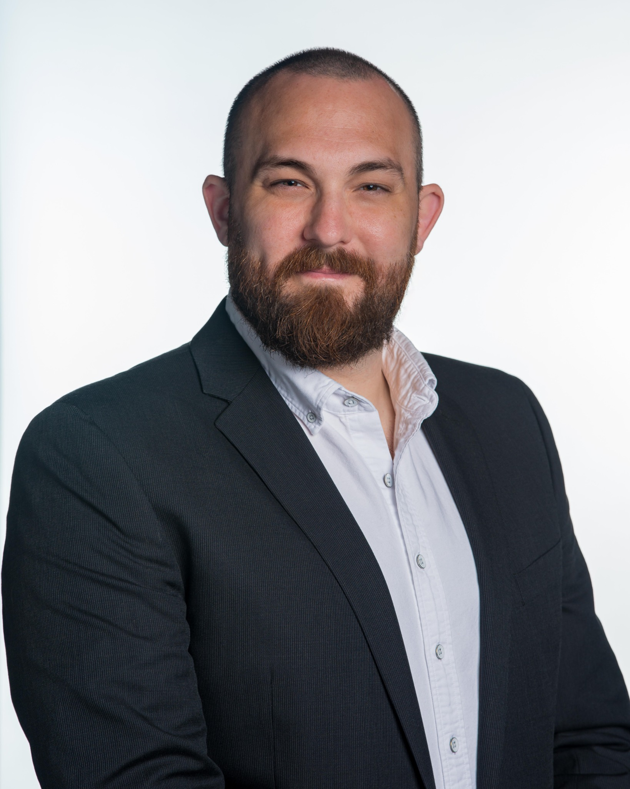

A PROPOSED TEAM ARCHITECTURE
National coaching.
Local relationships.
One structure I would evaluate after listening to the organization: three distinct growth roles, each with national leadership, working together in regional pods.

NATIONAL LEADERSHIPHead of Growth
Leads three managers. Aligns strategy, economics, recruiting, and retention.
01 · DEVELOP THE PIPELINE
Business Development
Representatives
Led by a national BDR manager
Research and engage qualified agents and teams. Make calls, build relationships, and create well-qualified meetings for their paired growth executive.
Focus: Target quality, qualified meetings, and pipeline contribution.
02 · OWN THE RECRUITING CYCLE
Agent Growth
Executives
Led by a national growth executive manager
Prospect alongside a paired BDR, lead discovery and in-person meetings, and own the recruiting cycle for established agents and mid-sized teams.
Focus: Conversion, production added, economics, and successful integration.
03 · WIN STRATEGIC RELATIONSHIPS
Strategic Growth
Executives
Led by a national strategic growth manager
Focus on high-impact producers and major teams. Build senior relationships, mentor Agent Growth Executives, and coordinate their regional pod.
Focus: Strategic production added, durable relationships, and team development.
HOW THE ROLES WORK TOGETHER
A regional pod
Local relationships and coordinated execution. National standards and coaching.
Strategic Growth ExecutiveCoordinates locally · mentors growth executivesAgent Growth ExecutiveOwns discovery, meetings, and the recruiting cycleBusiness Development RepresentativePaired with the growth executive · builds qualified pipeline
Formal reporting stays with each role’s national manager. The strategic executive coordinates the regional pod, avoiding a second management chain. Regional brokerage leadership remains a close partner in agent relationships, integration, and retention.
BUILD THE NEXT GENERATION OF GROWTH LEADERS
A clear path to advance.
Recruit primarily into business development and set explicit milestones for progression: discovery skill, relationship judgment, pipeline execution, recruiting results, and the ability to coach others.
I have a broad network of people at each level. I would begin reconnecting with them while assessing the existing team, building a talent bench for the structure the business ultimately needs.
WHY THIS ROLE
One national platform.
Local market strength.
01Attract established producers.
I’ve built new markets through strategic partnerships. My focus would be on established agents and teams who strengthen Elliman’s luxury position, understanding their ambitions, evaluating the economics, and making a credible case for the move.
02Create cohesion across regions.
I’ve developed leaders, managed sales teams, and built operating cadences. I would partner with regional leadership on shared targeting, coaching, reporting, and recruiting standards, while leaving room for relationships and local market judgment.
03Make retention part of growth.
At Side, I worked across functions to support partner activation. I would apply that same discipline to producer integration, early productivity, and ongoing engagement. The promises made in recruiting must show up in the experience agents receive.